Visual Portfolio · 2025
Sanjay
Bharadwaj
Bharadwaj
Stage · Production · Spatial Design · New Media
workforsanjay@gmail.com | +91 97423 93803

Ten years working where engineering meets live performance — as stage manager, production manager, festival manager, set designer, and spatial designer, often wearing several of these hats on the same project.
A defining strand of the practice is product design for performance: sets, props, and technical systems designed to be built within budget, toured across cities, and reused show after show.
Over the past two years the practice has expanded into self-taught 3D modelling and auditorium design, and into producing new media art installations — bringing the same rigour to technologically ambitious, immersive work.


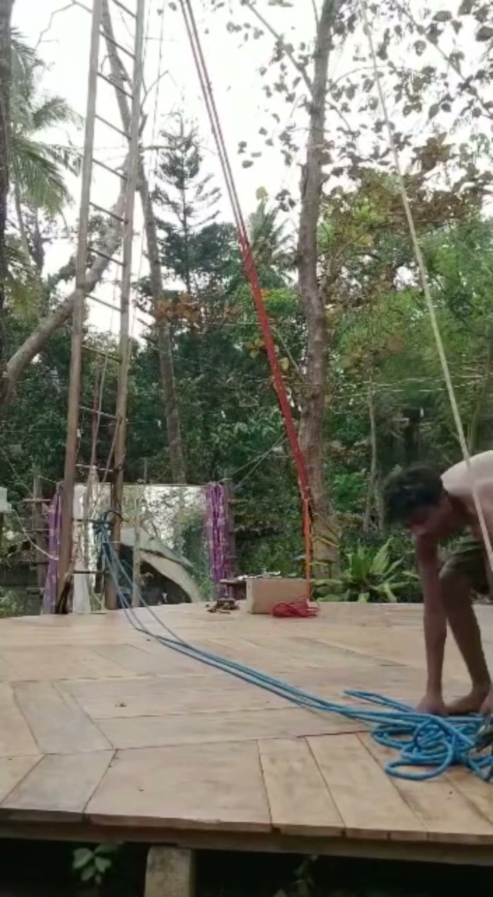

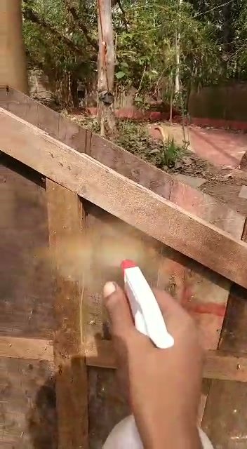
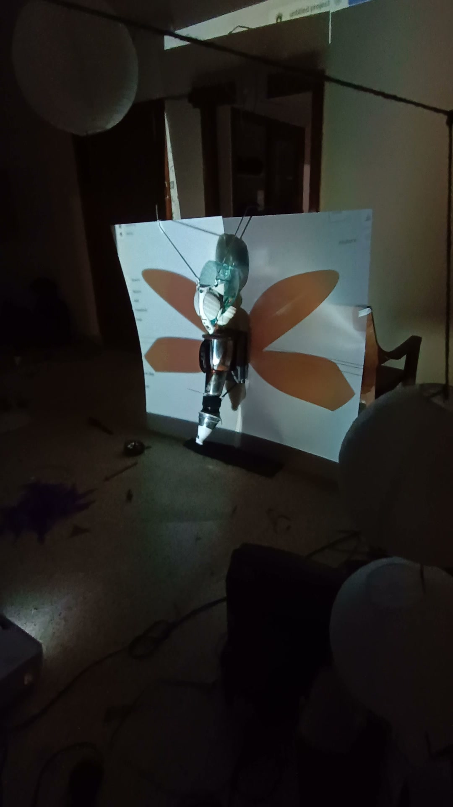
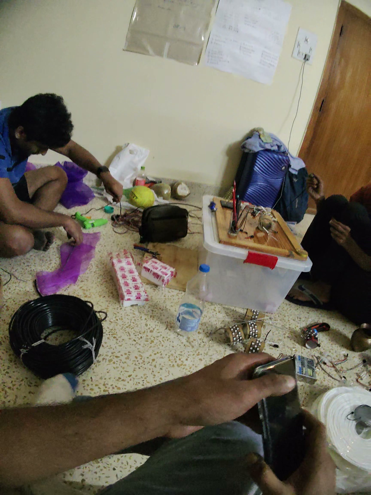
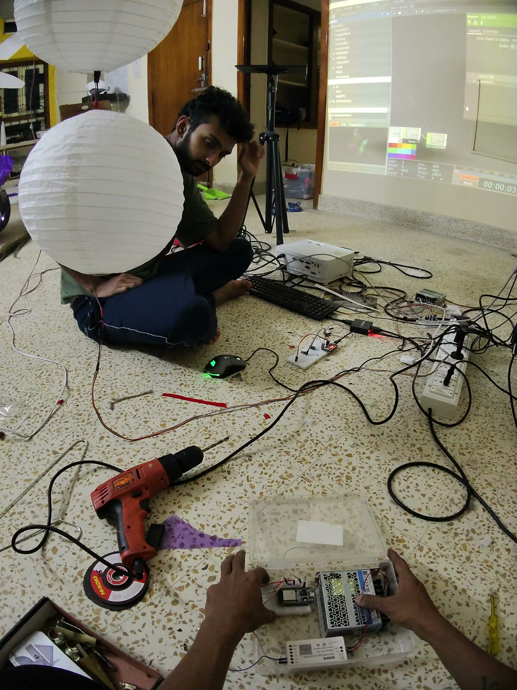
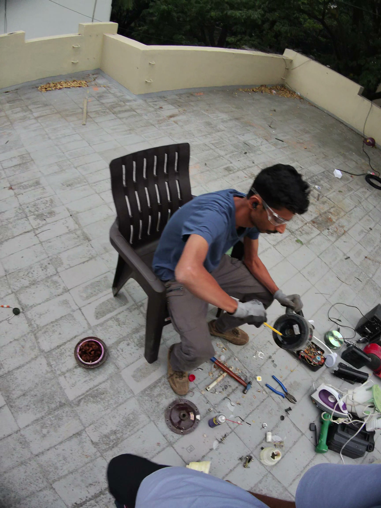
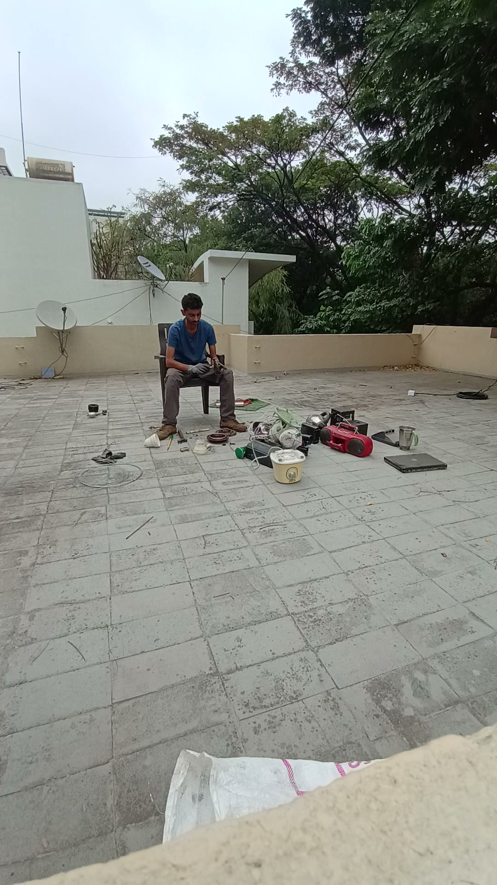
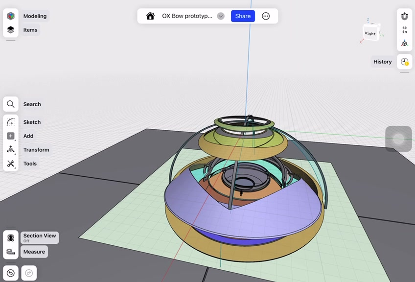


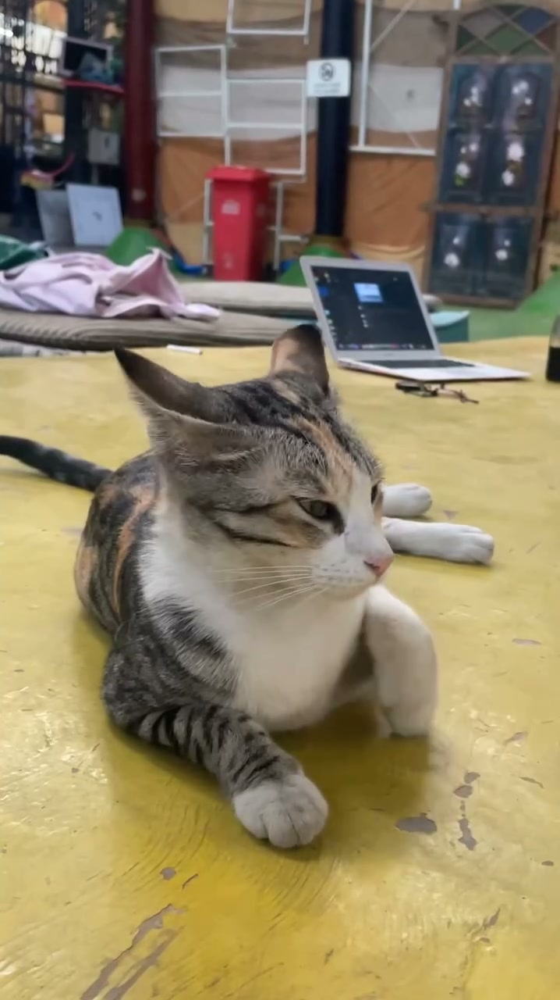
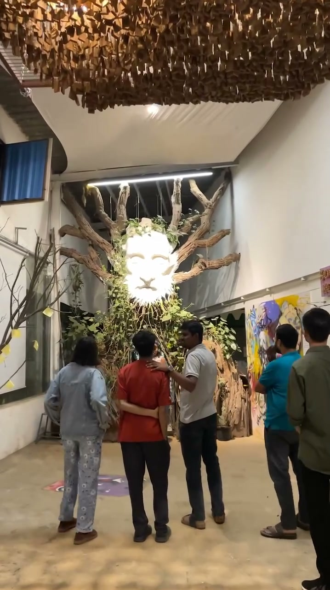
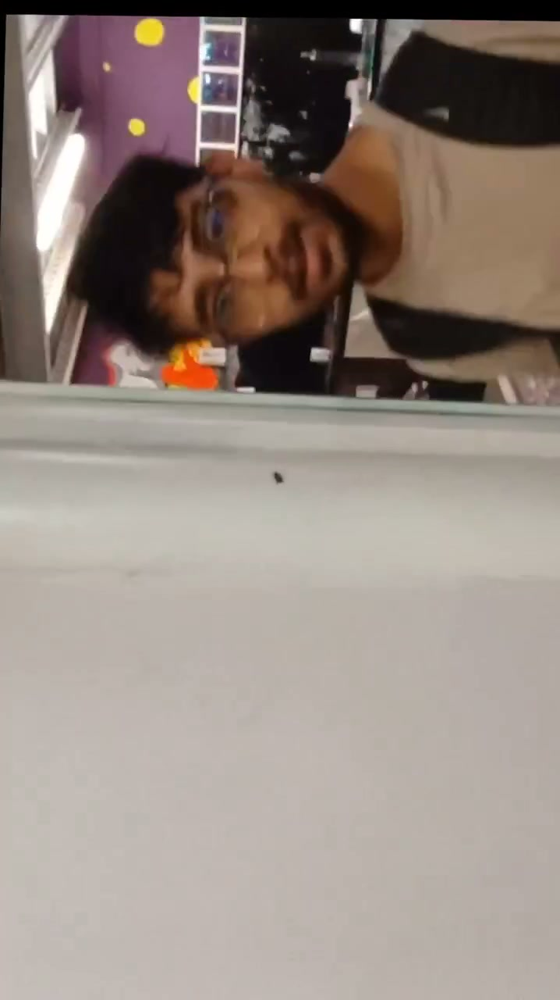
/Poster 1.webp)
/Building of the loom/IMG_1297.JPG)
/Building of the loom/IMG_1301.JPG)
/Building of the loom/IMG_1304.JPG)

| Production | Role | Company |
|---|---|---|
| Ronak & Jessie | Technical Coordinator | BookMyShow Live |
| Every Brilliant Thing | Stage Manager | QTP India |
| Pink Saree Revolution | Stage Manager | QTP / NCPA / Curve UK |
| Beediyolag ondu Maneya madi | Stage Mgr / Sound Op | RangaShankara |
| Mulla 2.0 | Production Manager | RangaShankara |
| Project | Role | Organisation |
|---|---|---|
| Circle 3 Residency | Residency Mentor | Sensistan |
| 35 Hours With Tim Supple | Production Manager | QTP / DashTransnational |
| Making Theatre Workshop 2018 | Prod. Mgr / Coordinator | Ranga Shankara |
| Festivals of the Future 2019 | Selected Participant | British Council |
| Festival | Role |
|---|---|
| Tata Literature Live! 2018 & 2019 | Head of Stage / Venue Mgr, NCPA |
| AHA! Int'l Children's Festival '19, Hyd | Festival Coordinator / Head of Stage |
| Thespo 20, 2019 | Senior Stage Manager |
| AHA! Theatre Festival 2018, Blr | Decor & Installation Coordinator |
| Future Fentastic AI Festival | Production Manager |
| Area | Detail |
|---|---|
| Technical | Stage Design · Set Design · Aerial Rigging · 3D Modelling · Carpentry · Upcycling |
| Software | Shaper 3D · Adobe Premiere Pro · DaVinci Resolve · MS Office |
| Languages | English · Hindi · Kannada |
| Education | Khoj Fellowship, Swaraj University (2016–17) |